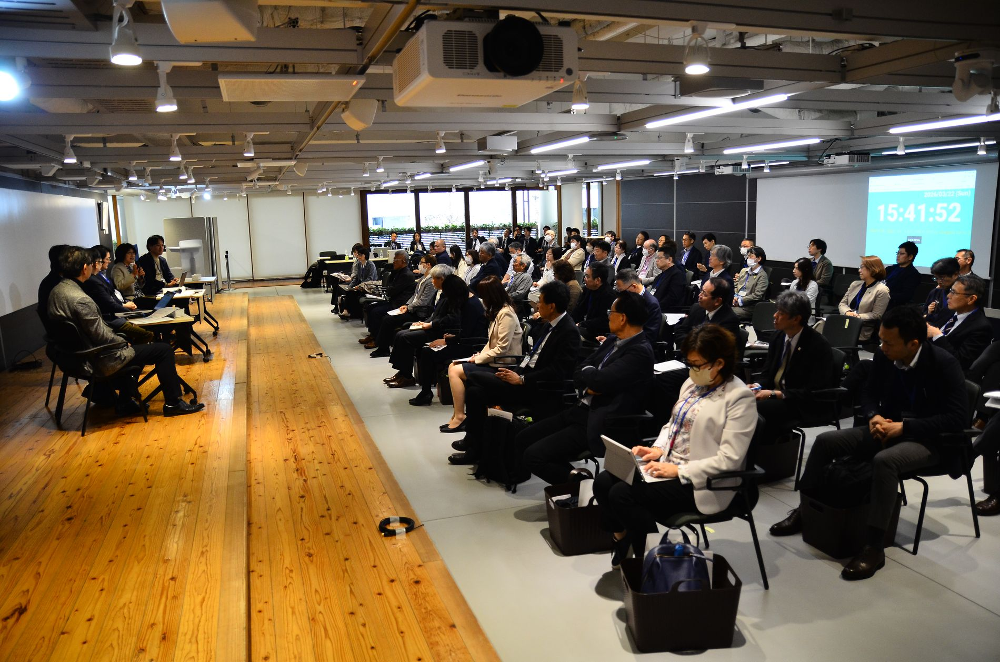
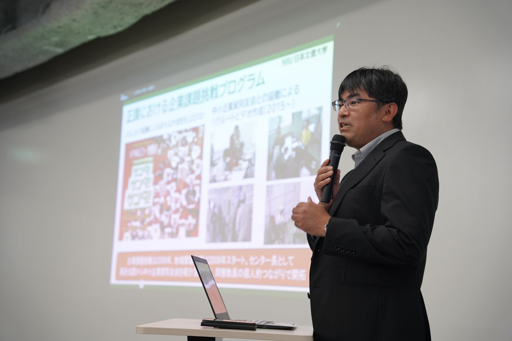
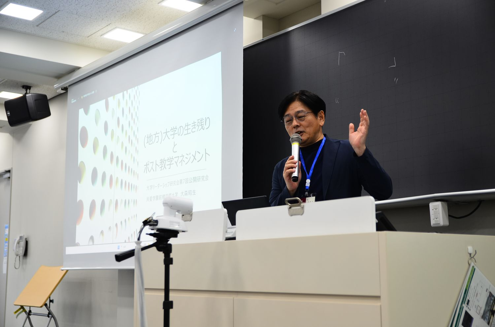
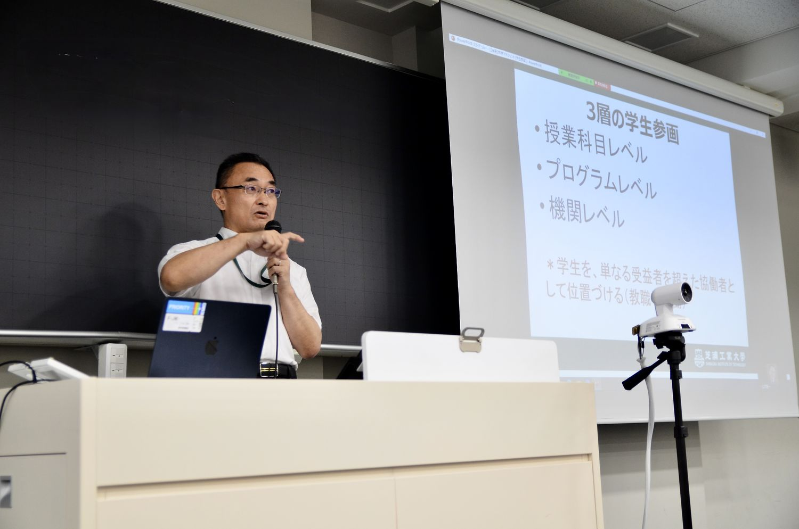
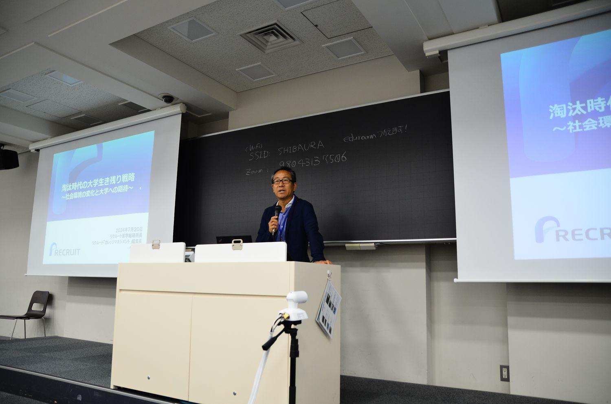
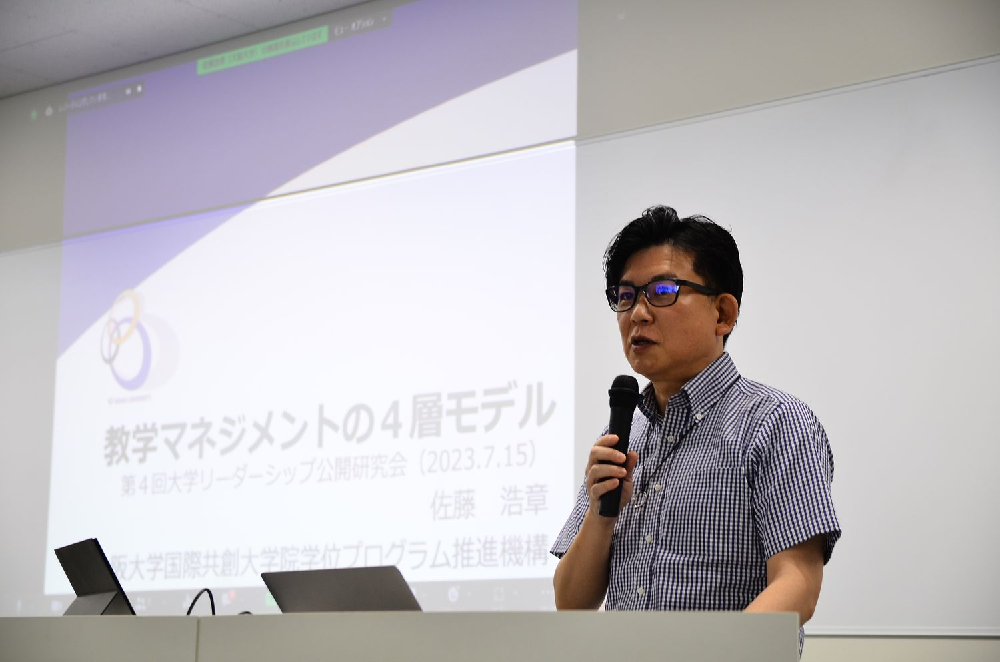
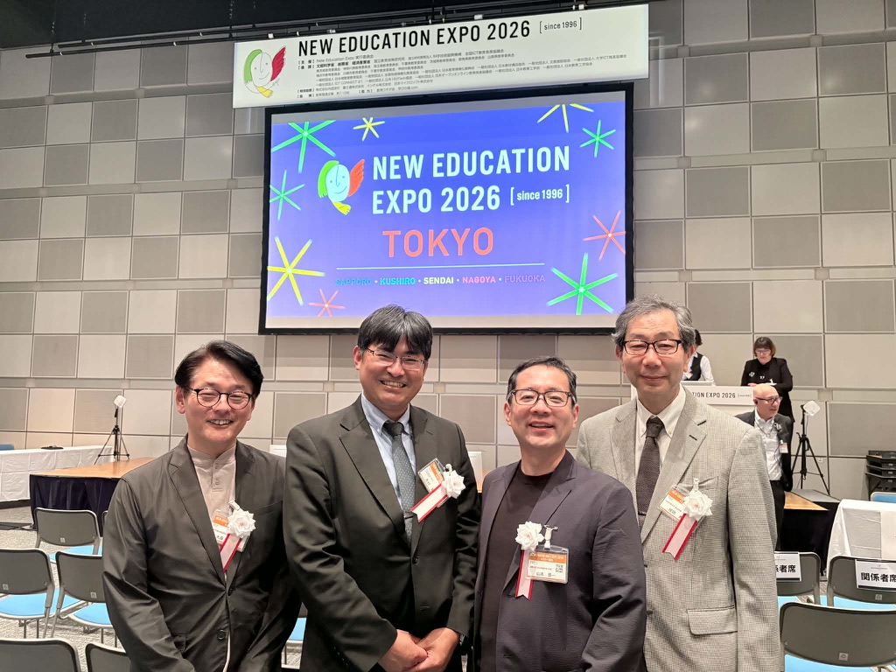
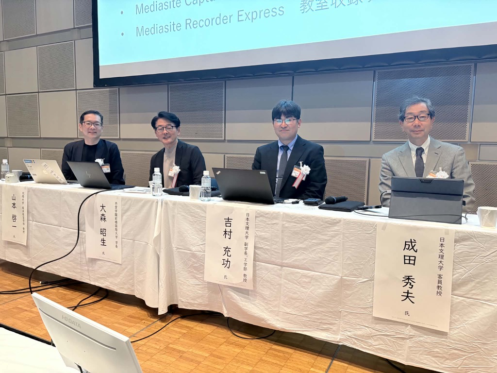

COLLEGE LEADERSHIP FORUM

COLLEGE LEADERSHIP FORUM · SINCE 2018
大学を変革する、あらゆる教職員のリーダーシップ。
大学リーダーシップ研究会は、大森昭生（共愛学園前橋国際大学）、成田秀夫（日本文理大学）、吉村充功（日本文理大学）、山本啓一（北陸大学）が発起人となり、2018年に発足した研究会です。
教学マネジメントを担う現場の教職員のリーダーシップの育成と発展のために、リーダーシップ開発、教育改革、組織開発等について研究を行うとともに、多くの方々の相互交流・情報共有の場を提供しています。第1回から第9回までの公開研究会には、全国から延べ696名、実人数で372名の教職員にご参加いただきました。
LATEST
直近の公開研究会について
第9回公開研究会「共創を作り出すリーダーシップ」を、2026年7月11日（土）に芝浦工業大学 豊洲キャンパス 本部棟協創ラボで開催しました。開催概要と登壇者をご覧ください。
開催報告・発言録は、登壇者の確認を経たのち掲載します。
次回・第10回公開研究会は、山本啓一の近刊『学部長の教科書』を題材に開催する予定です。日程が決まり次第ご案内します。
ARCHIVE
これまでの公開研究会
- FORUM 092026年7月11日（土）芝浦工業大学

講演の様子 - FORUM 082026年3月22日（日）株式会社内田洋行

講演「自律的組織を生成する――対話による合意形成」 - FORUM 072025年7月12日（土）芝浦工業大学

講演の様子（芝浦工業大学 豊洲キャンパス） - FORUM 062025年2月16日（日）共立女子大学

基調講演「拡張されたFD概念とアカデミック・リーダーの役割」 - WORKSHOP2024年7月21日（日）芝浦工業大学ミドル教員のリーダーシップとマネジメント力を高めるための越境型研修参加 約40名（2日目の研修のみ。統合データでは第5回に通算）

ミニレクチャー「リーダーシップとマネジメントの2局面」 - FORUM 052024年7月20日（土）芝浦工業大学

基調講演「淘汰時代の大学生き残り戦略」（小林浩氏） - FORUM 042023年7月15日（土）芝浦工業大学

特別講演「教学マネジメントの4層モデル」（佐藤浩章先生） - FORUM 032023年2月26日（日）株式会社内田洋行

会場の様子（内田洋行 ユビキタス協創広場CANVAS） - FORUM 022022年7月9日（土）アルカディア市ヶ谷

基調講演（アルカディア市ヶ谷 私学会館） - FORUM 012018年10月14日（日）株式会社内田洋行

特別講演「大学を活性化するリーダーのあり方」（吉武博通先生）
ABOUT
研究会について


発起人
- 大森 昭生共愛学園前橋国際大学 学長
- 成田 秀夫日本文理大学 客員教授
- 吉村 充功日本文理大学 副学長
- 山本 啓一北陸大学 経済経営学部 教授
科学研究費助成事業
- 2025〜2027年度 「ダイナミックな教学マネジメント体制の構築〜ミドル教職員の育成と組織開発に向けて」（研究代表者：山本啓一）25K06382
- 2022〜2024年度 「教学マネジメントにおける学部長等のミドルリーダーシップ研究」（研究代表者：山本啓一）22K02698
JSPS科研費 基盤研究(C)。公開研究会は本研究の一環として開催しています。
刊行物
- 「学部長による教学マネジメントの認識とその構造」石川勝彦・山本啓一ほか 『北陸大学紀要』第60号、2025年
 『今選ぶなら、地方小規模私立大学！〜偏差値による進路選択からの脱却〜』編著・報告：大森昭生（共愛学園前橋国際大学）、成田秀夫（河合文化教育研究所）、山本啓一（北陸大学）、吉村充功（日本文理大学）。特別対談：中原淳（立教大学 教授）。レゾンクリエイト、2018年
『今選ぶなら、地方小規模私立大学！〜偏差値による進路選択からの脱却〜』編著・報告：大森昭生（共愛学園前橋国際大学）、成田秀夫（河合文化教育研究所）、山本啓一（北陸大学）、吉村充功（日本文理大学）。特別対談：中原淳（立教大学 教授）。レゾンクリエイト、2018年
関連する登壇・企画
- 2026年6月4日New Education Expo 2026（東京）に発起人4名で登壇
- 2023年6月1日・10日New Education Expo 2023 において「教学マネジメント構築とミドルリーダーシップの重要性」をテーマに登壇
- 2023年3月16日第29回大学教育研究フォーラム 参加者企画セッション「教学マネジメントにおける大学教員のミドルリーダーシップ」を開催
CONTACT
事務局・お問い合わせ
| 事務局 | 京都府京都市北区紫野北花ノ坊町96 佛教大学キャンパス内（水谷俊之） |
|---|---|
| メール | toshimiz@bukkyo-u.ac.jp（事務局・水谷） ke-yamamoto@hokuriku-u.ac.jp（山本） |